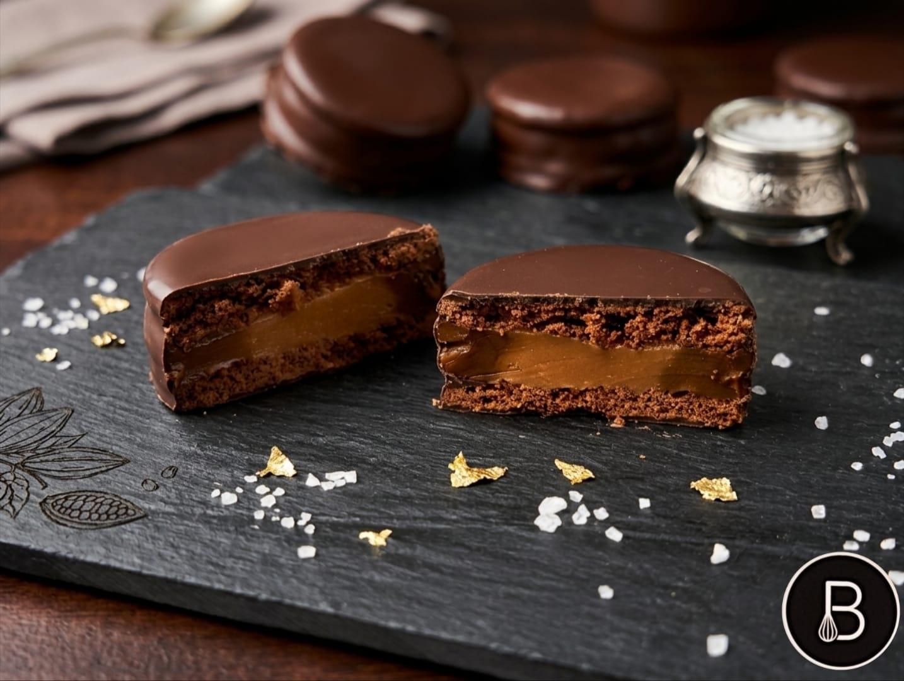
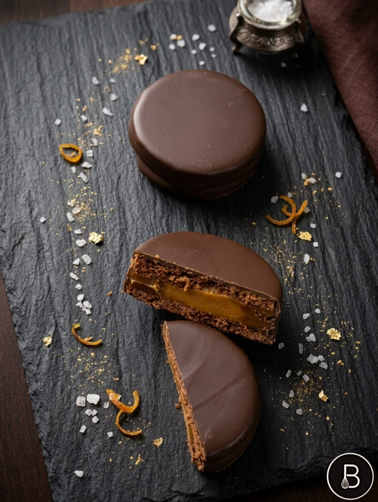
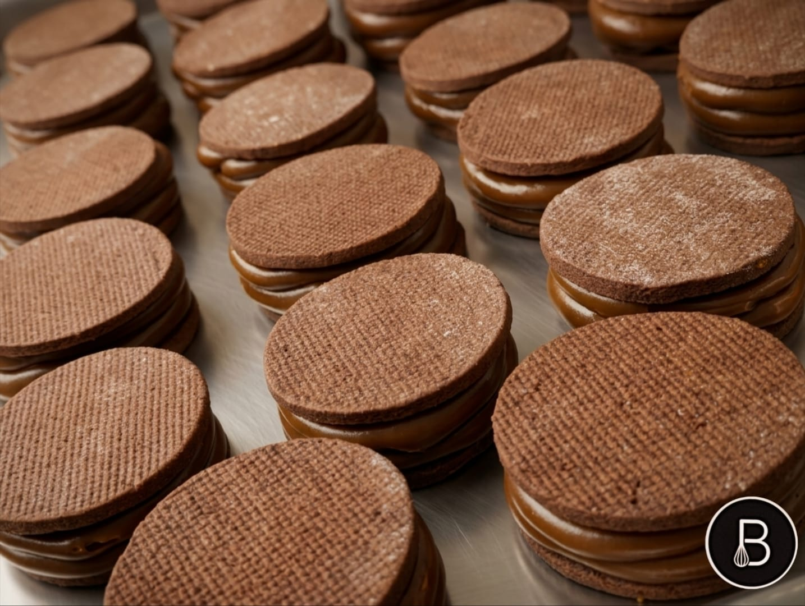
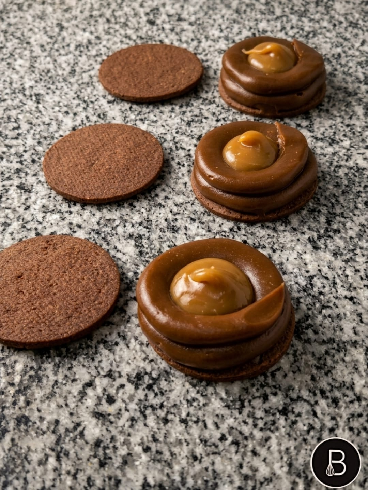

El secreto está en lo simple
El alfajor “Havanna de sal marina” que intenté recrear en esta receta, se llama oficialmente "Alfajor Mar del Plata" y por supuesto que para lograr un sabor y textura exactos, necesitaríamos contar con la fórmula exacta, que sus fabricantes mantienen "bajo 7 llaves". El alfajor fue creado para conmemorar los 150 años de Mar del Plata, aniversario que se celebró en febrero de 2024. Havanna, que nació en esa ciudad en 1948, buscaba hacer un producto que tuviera una conexión directa con su lugar de origen. De ahí que decidieron agregar algo característico del lugar, como es "el mar" y que en cada bocado podamos sentir un poquito de ese mar. La combinación de las escamas de sal marina, en contraste con el chocolate al 70 % el dulce de leche, y una especie de ganache de dulce de leche, hacen una combinación de sabores y texturas casi perfecta"
La receta
Ingredientes
Tapitas
- Manteca 150 gr
- Azúcar 50 gr
- Miel 50 gr
- Ralladura Naranja 1/2 un
- Ralladura Limón 1/2 un
- Huevo 1 un
- Escencia de vainilla 1 cta
- Harina 0000 250 gr
- Almidón de maíz 50 gr
- Cacao amargo 20 gr
- Polvo para hornear 10 gr
- Bicarbonato de sodio 7 gr
- Sal marina gruesa c/n
Relleno 1: Ganache de choco blanco y dulce de leche
- Chocolate cobertura blanco 150 gr
- Dulce de leche repostero 100 gr
- Crema de leche 100 gr
Relleno 2:
- Dulce de leche repostero 1 kg
Armado:
- Chocolate cobertura semiamargo templado, o baño de repostería 400 gr
- Manteca de cacao 30 a 50% si utilizamos cobertura, y si utilizamos baño, aceite vegetal

Preparación
Procedimiento tapas:
- 1Batir un minuto la manteca y agregar el azúcar y miel.
- 2Incorporar el huevo y luego añadir todos los secos tamizados (harina, almidón de maíz, cacao, polvo de hornear y bicarbonato de sodio).
- 3Unir la masa y trabajar un poco para que adquiera cierta tenacidad y no se rompa tan fácilmente.
- 4Estirar entre papel guitarra o film, hasta 3 o 4 mm de espesor y llevar a frío durante 2 horas mínimo.
- 5Cortar las tapas con cortante de 6 cm, y colocar sobre placas enmantecadas, placa de silicona o microperforada, o papel manteca
- 6Espolvorear las tapas con un poco de sal marina,si es muy gruesa machacar un poco, y presionar un poco para que la sal no se caiga de las tapas durante la cocción.
- 7En lo posible congelar antes de cocinar para que no se deformen durante la cocción.
- 8Cocinar a 160°C durante 6 minutos o hasta que no quede marcado al tocar la superficie.

Ganache
- 1Calentar 30 seg. en microondas el chocolate blanco picado para comenzar a fundirlo.
- 2Agregar el dulce de leche.
- 3Calentar la crema hasta el primer hervor, y volcar sobre la mezcla de chocolate y dulce de leche.
- 4Esperar a que la crema derrita por completo al chocolate, y con batidor de mano integrar bien empezando desde el centro e ir incorporando hacia afuera.
- 5Una vez emulsionada la mezcla, dejar atemperar a temperatura ambiente, cubrir y reservar en frío durante 3 o 4 horas como mínimo (idealmente reservarla de un dia para otro).
- 6Una vez fría la ganache, colocar en manga con pico recto de 1 cm.
Armado
- 1Utilizamos las tapas con la parte curva hacia adentro, colocar el dulce en manga con pico recto de 1 cm, y trazar 2 aros superpuestos en el perímetro de una de las tapas.
- 2Colocar ganache en el centro.
- 3Luego tapar con otra tapa de masa y presionar levemente para que el dulce llegue hasta el nivel de las tapas.
Baño
- 1Bañar con cobertura de chocolate semiamargo adicionada con un 30 a 50% de manteca de cacao, dependiendo de la cobertura utilizada
- 2Alternativamente usar chocolates hidrogenados. (Baño de repostería de buena calidad) en el mercado existen varios, especialmente diseñados para baño, y tienen la fluidez ideal como para lograr una fina capa de chocolate.
- 3Mantener en lugar fresco (No heladera).
Los mejores momentos suelen venir con algo dulce.
¿Querés ver más recetas?
Encontrame en Instagram
@marcbenetti
Seguime en Instagram